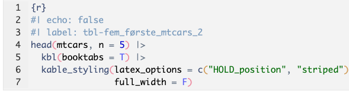
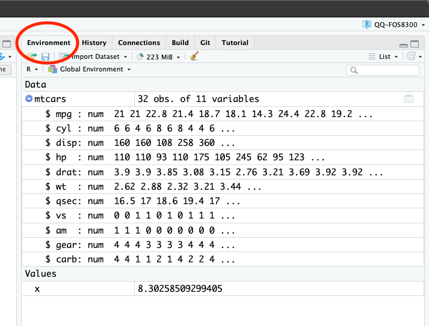

library(tidyverse)
library(kableExtra)Quarto dokument
Overskrift
Vanlig brødtekst før vi har en «code chunck»
2 + 2[1] 4og forsetter med en ny der vi definerer en variabel.
x <- 3 + 3 + log(10)Henter inn et eksempel datasett:
data(mtcars)Sjekker toppen av mtcars. Se output fra code-chunk (fem_første_mtcars?).
head(mtcars, n = 5) mpg cyl disp hp drat wt qsec vs am gear carb
Mazda RX4 21.0 6 160 110 3.90 2.620 16.46 0 1 4 4
Mazda RX4 Wag 21.0 6 160 110 3.90 2.875 17.02 0 1 4 4
Datsun 710 22.8 4 108 93 3.85 2.320 18.61 1 1 4 1
Hornet 4 Drive 21.4 6 258 110 3.08 3.215 19.44 1 0 3 1
Hornet Sportabout 18.7 8 360 175 3.15 3.440 17.02 0 0 3 2Vi kan også generere fint formaterte tabeller som den i Table 1.
head(mtcars, n = 5) |>
kbl(booktabs = T) |>
kable_styling(latex_options = c("HOLD_position", "striped"),
full_width = F, font_size = 8)| mpg | cyl | disp | hp | drat | wt | qsec | vs | am | gear | carb | |
|---|---|---|---|---|---|---|---|---|---|---|---|
| Mazda RX4 | 21.0 | 6 | 160 | 110 | 3.90 | 2.620 | 16.46 | 0 | 1 | 4 | 4 |
| Mazda RX4 Wag | 21.0 | 6 | 160 | 110 | 3.90 | 2.875 | 17.02 | 0 | 1 | 4 | 4 |
| Datsun 710 | 22.8 | 4 | 108 | 93 | 3.85 | 2.320 | 18.61 | 1 | 1 | 4 | 1 |
| Hornet 4 Drive | 21.4 | 6 | 258 | 110 | 3.08 | 3.215 | 19.44 | 1 | 0 | 3 | 1 |
| Hornet Sportabout | 18.7 | 8 | 360 | 175 | 3.15 | 3.440 | 17.02 | 0 | 0 | 3 | 2 |
Hvis vi bare vil ha tabellen og ikke koden som genererer den endrer vi til:

Resultatet av koden i Figure 1 ovenfor er tabellen gjengitt i Table 2.
| mpg | cyl | disp | hp | drat | wt | qsec | vs | am | gear | carb | |
|---|---|---|---|---|---|---|---|---|---|---|---|
| Mazda RX4 | 21.0 | 6 | 160 | 110 | 3.90 | 2.620 | 16.46 | 0 | 1 | 4 | 4 |
| Mazda RX4 Wag | 21.0 | 6 | 160 | 110 | 3.90 | 2.875 | 17.02 | 0 | 1 | 4 | 4 |
| Datsun 710 | 22.8 | 4 | 108 | 93 | 3.85 | 2.320 | 18.61 | 1 | 1 | 4 | 1 |
| Hornet 4 Drive | 21.4 | 6 | 258 | 110 | 3.08 | 3.215 | 19.44 | 1 | 0 | 3 | 1 |
| Hornet Sportabout | 18.7 | 8 | 360 | 175 | 3.15 | 3.440 | 17.02 | 0 | 0 | 3 | 2 |
Alle objekter vi har definert dukker opp i Environment fanen i øvre høyre hjørne. Se figur Figure 2.

Mer om Quarto dokumenter finner en i “R for Data Science (2e) - 30 Quarto” (n.d.). God og oppdatert informasjon om tidyverse finner man på sidene “Easily Install and Load the Tidyverse” (n.d.).
Referanser
“Easily Install and Load the Tidyverse.” n.d. https://tidyverse.tidyverse.org/.
“R for Data Science (2e) - 30 Quarto.” n.d. https://r4ds.hadley.nz/quarto.html.
Appendiks
Resultat av kommandoen sessionInfo(). Det siste her mest for å vise hvordan man får plassert referanselisten før appendikset.
> sessionInfo() |> print(width = 78)
R version 4.2.2 (2022-10-31)
Platform: aarch64-apple-darwin20 (64-bit)
Running under: macOS Monterey 12.5.1
Matrix products: default
LAPACK: /Library/Frameworks/R.framework/Versions/4.2-arm64/Resources/lib/libRlapack.dylib
locale:
[1] en_US.UTF-8/en_US.UTF-8/en_US.UTF-8/C/en_US.UTF-8/en_US.UTF-8
attached base packages:
[1] stats graphics grDevices datasets utils methods base
other attached packages:
[1] kableExtra_1.3.4 forcats_0.5.2 stringr_1.5.0.9000
[4] dplyr_1.0.10 purrr_0.3.5 readr_2.1.3
[7] tidyr_1.2.1 tibble_3.1.8 ggplot2_3.4.0
[10] tidyverse_1.3.2
loaded via a namespace (and not attached):
[1] gert_1.9.2 svglite_2.1.0 lubridate_1.9.0
[4] gitcreds_0.1.2 assertthat_0.2.1 rprojroot_2.0.3
[7] digest_0.6.29 utf8_1.2.2 R6_2.5.1
[10] cellranger_1.1.0 backports_1.4.1 sys_3.4.1
[13] reprex_2.0.2 evaluate_0.16 highr_0.9
[16] httr_1.4.4 pillar_1.8.1 rlang_1.0.6
[19] googlesheets4_1.0.1 curl_4.3.3 readxl_1.4.1
[22] rstudioapi_0.14 jquerylib_0.1.4 rmarkdown_2.15
[25] webshot_0.5.4 googledrive_2.0.0 munsell_0.5.0
[28] broom_1.0.2 compiler_4.2.2 modelr_0.1.10
[31] xfun_0.32 systemfonts_1.0.4 pkgconfig_2.0.3
[34] askpass_1.1 htmltools_0.5.3 openssl_2.0.5
[37] tidyselect_1.2.0 viridisLite_0.4.1 fansi_1.0.3
[40] crayon_1.5.2 tzdb_0.3.0 dbplyr_2.2.1
[43] withr_2.5.0 grid_4.2.2 jsonlite_1.8.0
[46] gtable_0.3.1 lifecycle_1.0.3 DBI_1.1.3
[49] magrittr_2.0.3 credentials_1.3.2 scales_1.2.1
[52] cachem_1.0.6 cli_3.4.1 stringi_1.7.8
[55] renv_0.15.5 fs_1.5.2 bslib_0.4.0
[58] xml2_1.3.3 ellipsis_0.3.2 generics_0.1.3
[61] vctrs_0.5.1 gh_1.3.1 tools_4.2.2
[64] glue_1.6.2 hms_1.1.2 fastmap_1.1.0
[67] timechange_0.1.1 colorspace_2.0-3 gargle_1.2.1
[70] rvest_1.0.3 knitr_1.39 haven_2.5.1
[73] sass_0.4.2 usethis_2.1.6
>